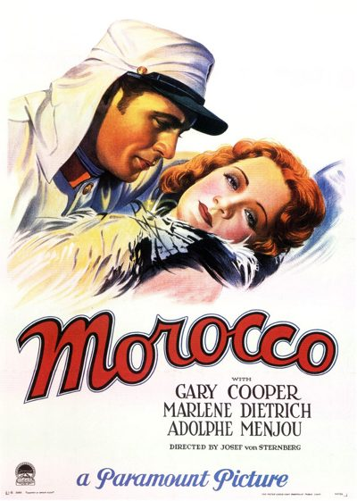

Morocco

Starring: Gary Cooper, Marlene Dietrich, Adolphe Menjou
Director: Josef von Sternberg
Writer: Jules Furthman, Benno Vigny
Producer: Hector Turnbull
Morocco is a 1930 American pre-Code romantic drama film directed by Josef von Sternberg and starring Gary Cooper, Marlene Dietrich, and Adolphe Menjou.
Watch Online: Internet Archive
Trivia
- Selected for the National Board of Review: Top Ten Films.
- Also nominated for: Academy Award for Best Actress; Academy Award for Best Director; Academy Award for Best Cinematography; Academy Award for Best Production Design.
- Even before Josef von Sternberg's The Blue Angel was released to global acclaim in 1930, Paramount Pictures took a keen interest in its new star, Marlene Dietrich.
- Legend has it that Dietrich included a copy of author Benno Vigny's story Amy Jolly in a going-away gift package to Sternberg when he sailed for America.
- On the basis of test footage Sternberg provided from the yet unreleased The Blue Angel, producer B. P. Schulberg agreed to bring Dietrich to Hollywood in February 1930 under a two-picture contract.
Filming Locations
- Sternberg filmed so as to make Cooper look up at Dietrich, emphasizing her at his expense.
Previous Showings
16 Runs • 9 Festivals
Original Billings: 1 run (February 18, 1931)
Original Run: February 18, 1931 (Wednesday - Friday)
All runs on record (16):
- February 18, 1931 (Wednesday - Friday)Marlene Dietrich, Gary Cooper
- February 12 - 16, 1988w/ Shanghai Express
- October 5 - 7, 1990w/ The Scarlet Empress
- June 19 - 24, 1992w/ The Scarlet Empress
- October 7 - 10, 1995w/ The Sign of the Cross
- July 17 - 18, 1997w/ She Done Him Wrong
- October 27 - 29, 1999Favorites: Fall 1999 Seriesw/ Sunrise
- September 21 - 22, 2000Summer 2000w/ The Scarlet Empress
- March 3 - 4, 2007Film Noir, Val Lewton, 1930s musicals and more!w/ The Love Parade
- March 10 - 11, 2007w/ The Love Parade
- June 16 - 18, 2010Spring 2010w/ The Devil Is a Woman
- July 10 - 12, 2013Summer 2013w/ Shanghai Express
- July 13 - 15, 2016Summer 2016w/ Shanghai Express
- August 10 - 12, 2018Summer 2018w/ High Noon
- August 11 - 12, 2022Summer 2022w/ High Noon
- March 22 - 23, 2025Lubitsch, Mamoulian, Sternberg Three Great Directorsw/ The Docks of New York